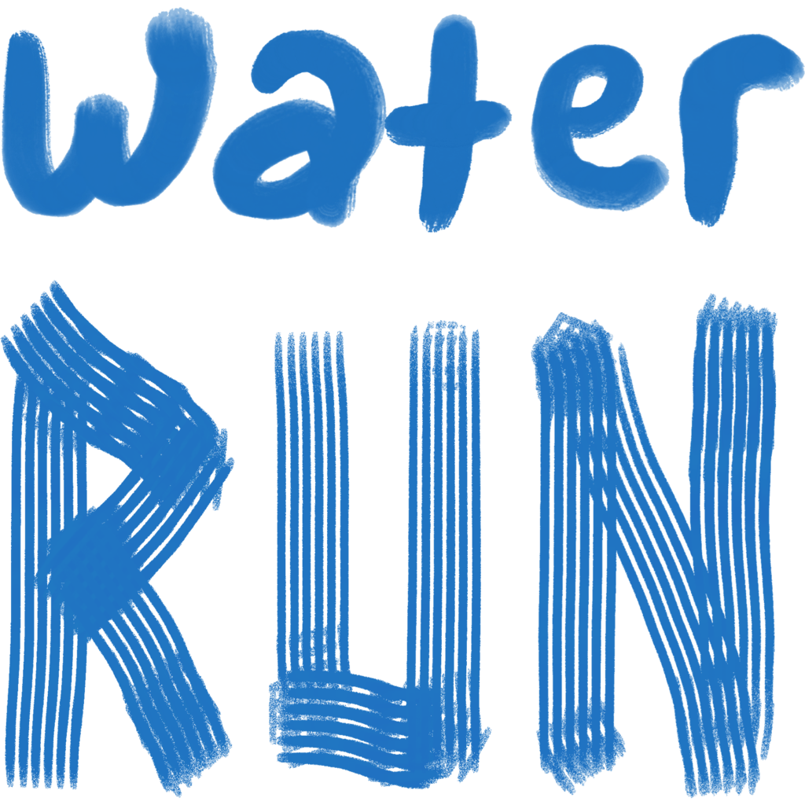

<!doctype html>
<html>
  <head>
    <meta charset="utf-8" />
    <title>Field Notes film — Water Run</title>
    <link rel="stylesheet" href="common.css" />
    <style>
      /* The Field Notes direction in motion: 25 s, 886 x 1920 (443 x 960 pt @2x),
     the App Store's iPhone preview size. Nothing here animates by itself:
     render(t) sets every frame from the clock, so scripts/render-video.mjs can
     step it frame by frame and get the same film every time. */
      :root {
        --paper: #f7f2e8;
        --ink: #1e71bd;
        --deep: #0b2f55;
        --pencil: #7d7765;
        --red: #d6402a;
        --green: #1f8a4c;
      }
      body {
        width: 443px;
        height: 960px;
        overflow: hidden;
        background: var(--paper);
        position: relative;
      }
      .abs {
        position: absolute;
      }
      .cap {
        position: absolute;
        left: 26px;
        width: 391px;
        top: 70px;
        font: 400 50px/0.98 "Instrument Serif";
        letter-spacing: -0.015em;
        color: var(--deep);
        text-wrap: balance;
        z-index: 6;
      }
      .cap em {
        color: var(--ink);
      }
      .mono {
        font: 500 10px/1.4 "DM Mono";
        letter-spacing: 0.14em;
        text-transform: uppercase;
        color: var(--pencil);
      }
      .stamp {
        position: absolute;
        z-index: 9;
        border: 3px solid currentColor;
        border-radius: 10px;
        padding: 10px 16px 8px;
        font: 500 26px/1 "DM Mono";
        letter-spacing: 0.12em;
        text-transform: uppercase;
        filter: url(#stamp);
        mix-blend-mode: multiply;
      }
      .stamp::after {
        content: "";
        position: absolute;
        inset: 3px;
        border: 1px solid currentColor;
        border-radius: 6px;
      }
      .screen {
        position: absolute;
        inset: 0;
      }
    </style>
  </head>
  <body>
    <script type="module">
      import * as S from "./screens.js";
      import { defs, grain, lanes, routePx, smooth } from "./art.js";

      const d = await S.loadData("..");
      const W = 443,
        H = 960;

      // --- easing -------------------------------------------------------------
      const clamp = (x) => Math.max(0, Math.min(1, x));
      const span = (t, a, b) => clamp((t - a) / (b - a));
      const outCubic = (x) => 1 - (1 - x) ** 3;
      const inOut = (x) => (x < 0.5 ? 4 * x ** 3 : 1 - (-2 * x + 2) ** 3 / 2);
      const outBack = (x) => 1 + 2.4 * (x - 1) ** 3 + 1.4 * (x - 1) ** 2;
      // 0 → 1 → 0 across a scene, with eased fades in and out.
      const life = (t, a, b, fin = 0.5, fout = 0.5) =>
        outCubic(span(t, a, a + fin)) * (1 - inOut(span(t, b - fout, b)));

      // --- the loop on the map, with each stop's place along it ----------------
      const view = d.maps["paper-loop"];
      const loopPts = smooth(routePx(view, d.run.trace), 2);
      const cum = [0];
      for (let i = 1; i < loopPts.length; i++)
        cum.push(
          cum[i - 1] +
            Math.hypot(loopPts[i][0] - loopPts[i - 1][0], loopPts[i][1] - loopPts[i - 1][1]),
        );
      const total = cum[cum.length - 1];
      const stops = d.run.stops.map((f) => {
        const [x, y] = S.project(view, f.lat, f.lon);
        let bi = 0,
          bd = Infinity;
        loopPts.forEach(([px, py], i) => {
          const dd = (px - x) ** 2 + (py - y) ** 2;
          if (dd < bd) {
            bd = dd;
            bi = i;
          }
        });
        return { ...f, x, y, frac: cum[bi] / total };
      });

      // Timeline. Sound cues are read back by the renderer to score the film.
      const T = {
        draw: [3.4, 6.6],
        nearby: [7.0, 10.6],
        plan: [10.6, 14.2],
        run: [14.2, 19.6],
        recap: [19.6, 22.8],
        end: [22.8, 25],
      };
      const SURVEY = 17.0,
        TAP = 18.0,
        STAMP = 18.35;
      window.EVENTS = [
        ...stops.map((s) => ({ t: T.draw[0] + s.frac * (T.draw[1] - T.draw[0]), type: "drop" })),
        { t: 7.15, type: "whoosh" },
        { t: 10.75, type: "whoosh" },
        { t: 14.35, type: "whoosh" },
        { t: SURVEY, type: "sheet" },
        { t: TAP, type: "tap" },
        { t: STAMP, type: "stamp" },
        { t: 19.75, type: "whoosh" },
        { t: 23.0, type: "chime" },
      ];
      window.DURATION = 25;

      // --- build --------------------------------------------------------------
      const phoneScreens = {
        nearby: S.nearby(d),
        plan: S.planner(d),
        run: S.runScreen(d),
        survey: S.surveySheet(d),
        recap: S.recap(d),
      };
      const shadow =
        "0 1px 1px rgba(60,48,24,.25), 0 22px 44px -10px rgba(60,48,24,.38), 0 50px 90px -30px rgba(11,47,85,.35)";

      document.body.innerHTML = `${defs()}
  <div id="map" class="abs" style="left:1px;top:2px;width:440px;height:956px">
    
    <svg viewBox="0 0 440 956" style="position:absolute;inset:0;width:440px;height:956px">
      ${lanes(loopPts, { n: 7, gap: 2.6, width: 1.7, color: "#1e71bd", seed: 4, dash: "1 1" })}
      ${stops.map((s) => `<g class="stop" transform="translate(${s.x.toFixed(1)} ${s.y.toFixed(1)})"><g><circle r="8" fill="#1e71bd" stroke="#f7f2e8" stroke-width="2.5"/><circle r="15" fill="none" stroke="#1e71bd" stroke-width="1.2" class="ripple"/></g></g>`).join("")}
    </svg>
  </div>
  <div id="fade" class="abs" style="inset:0;background:linear-gradient(180deg,#f7f2e8 0%,rgba(247,242,232,.92) 24%,rgba(247,242,232,0) 42%);z-index:2"></div>

  <div id="intro" class="abs" style="inset:0;z-index:5">
    <div class="mono abs" style="left:26px;top:40px">Water Run · Field Notes</div>
    <div class="mono abs" style="right:26px;top:40px">Washington, D.C.</div>
    
    <div id="tag" class="abs" style="left:30px;right:30px;top:612px;text-align:center;font:400 34px/1.05 'Instrument Serif';color:var(--deep)">A runner-made map of <em style="color:var(--ink)">drinking fountains.</em></div>
  </div>

  <div id="c-draw" class="cap">Nine fountains. <em>One loop.</em></div>
  <div id="c-nearby" class="cap">Find water that <em>actually works.</em></div>
  <div id="c-plan" class="cap">Plan a loop past the ones <em>due a check.</em></div>
  <div id="c-run" class="cap">Run it. <em>We’ll point the way.</em></div>
  <div id="c-recap" class="cap">Every check lands on the <em>public map.</em></div>

  <div id="phone" class="abs" style="left:0;top:0;width:440px;height:956px;transform-origin:0 0;z-index:4">
    <div style="position:relative;width:440px;height:956px;border-radius:52px;overflow:hidden;box-shadow:${shadow};background:#000">
      ${Object.entries(phoneScreens)
        .map(([k, html]) => `<div class="screen" id="s-${k}">${html}</div>`)
        .join("")}
      <div id="ripple" class="abs" style="left:0;top:0;width:120px;height:120px;margin:-60px 0 0 -60px;border-radius:50%;background:rgba(255,255,255,.55);z-index:40"></div>
    </div>
  </div>
  <div id="stampmark" class="stamp" style="left:120px;top:236px;color:var(--green)">Working ✓</div>

  <div id="end" class="abs" style="inset:0;z-index:8;background:var(--paper)">
    
    <div class="abs" style="left:30px;right:30px;top:546px;text-align:center;font:400 36px/1.05 'Instrument Serif';color:var(--deep)">Drinking fountains, <em style="color:var(--ink)">verified by runners.</em></div>
    <div class="mono abs" style="left:0;right:0;top:668px;text-align:center;color:var(--ink)">Free · for iPhone</div>
  </div>
  <div class="abs" style="inset:0;z-index:20;pointer-events:none">${grain(0.2)}</div>`;

      const $ = (id) => document.getElementById(id);
      const lanePaths = [...document.querySelectorAll("#map path")];
      const stopEls = [...document.querySelectorAll(".stop > g")];
      const ripples = [...document.querySelectorAll(".ripple")];
      const cueDist = document.querySelector("#s-run .cue-dist");

      const set = (el, o) => Object.assign(el.style, o);

      window.render = (t) => {
        // Intro: the logo painted on left to right, then the line under it.
        const intro = 1 - inOut(span(t, 2.9, 3.5));
        set($("intro"), { opacity: intro });
        set($("logo"), {
          clipPath: `inset(0 ${(100 - 100 * inOut(span(t, 0.2, 1.5))).toFixed(2)}% 0 0)`,
          transform: `translateY(${-30 * inOut(span(t, 2.9, 3.5))}px)`,
        });
        set($("tag"), {
          opacity: outCubic(span(t, 1.4, 2.1)),
          transform: `translateY(${12 * (1 - outCubic(span(t, 1.4, 2.1)))}px)`,
        });

        // The map and the loop being drawn, stop by stop.
        const drawn = inOut(span(t, ...T.draw));
        set($("map"), { opacity: outCubic(span(t, 3.0, 3.8)) * (1 - 0.35 * span(t, 6.8, 7.4)) });
        lanePaths.forEach((p) => p.setAttribute("stroke-dashoffset", (1 - drawn).toFixed(4)));
        stops.forEach((s, i) => {
          const at = T.draw[0] + s.frac * (T.draw[1] - T.draw[0]);
          const k = span(t, at, at + 0.45);
          stopEls[i].setAttribute("transform", `scale(${t < at ? 0 : outBack(k).toFixed(3)})`);
          const r = span(t, at, at + 0.9);
          ripples[i].setAttribute("r", (8 + 22 * outCubic(r)).toFixed(2));
          ripples[i].setAttribute("opacity", t < at ? 0 : (1 - r).toFixed(3));
        });
        set($("fade"), { opacity: span(t, 3.0, 3.8) });

        // Captions.
        const caps = {
          draw: [3.6, 6.9],
          nearby: T.nearby,
          plan: T.plan,
          run: T.run,
          recap: T.recap,
        };
        for (const [k, [a, b]] of Object.entries(caps)) {
          const v = life(t, a + 0.15, b, 0.55, 0.4);
          set($(`c-${k}`), { opacity: v, transform: `translateY(${10 * (1 - v)}px)` });
        }

        // The phone: rises in, then each screen slides across the last.
        const rise = outCubic(span(t, 7.0, 7.9));
        const leave = inOut(span(t, 22.4, 22.9));
        const tilt = 2.5 * Math.sin(t * 0.35);
        set($("phone"), {
          transform: `translate(${66}px, ${300 + 700 * (1 - rise) + 700 * leave}px) rotate(${tilt.toFixed(2)}deg) scale(0.71)`,
        });
        const order = [
          ["nearby", T.nearby[0]],
          ["plan", T.plan[0]],
          ["run", T.run[0]],
          ["recap", T.recap[0]],
        ];
        order.forEach(([k, a], i) => {
          const x = i === 0 ? 0 : 440 * (1 - inOut(span(t, a, a + 0.6)));
          set($(`s-${k}`), { transform: `translateX(${x}px)`, zIndex: i * 2 + 1 });
        });
        // On the run: the distance closes, the sheet comes up, Working is tapped.
        const left = 0.35 * (1 - inOut(span(t, 14.9, 16.8)));
        cueDist.textContent =
          left < 0.19
            ? `${Math.max(30, Math.round((left * 5280) / 10) * 10)} ft`
            : `${left.toFixed(2)} mi`;
        const sheet = outCubic(span(t, SURVEY, SURVEY + 0.5));
        set($("s-survey"), {
          zIndex: 6,
          opacity: t < SURVEY ? 0 : 1,
          clipPath: `inset(${(1 - sheet) * 100}% 0 0 0)`,
          transform: `translateY(${(1 - sheet) * 60}px)`,
        });
        if (t >= T.recap[0]) set($("s-survey"), { opacity: 0 });
        const tap = span(t, TAP, TAP + 0.45);
        set($("ripple"), {
          transform: `translate(${220}px, ${710}px) scale(${0.2 + 1.4 * outCubic(tap)})`,
          opacity: t < TAP ? 0 : 1 - tap,
        });

        // The stamp lands on the page.
        const st = span(t, STAMP, STAMP + 0.22);
        set($("stampmark"), {
          opacity: t < STAMP ? 0 : life(t, STAMP, T.recap[0] + 0.3, 0.05, 0.4),
          transform: `rotate(-8deg) scale(${(1.7 - 0.7 * outCubic(st)).toFixed(3)})`,
        });

        // End card.
        const e = inOut(span(t, T.end[0], T.end[0] + 0.6));
        set($("end"), { opacity: e, clipPath: `circle(${(e * 120).toFixed(1)}% at 50% 60%)` });
      };

      window.render(0);
      await document.fonts.ready;
      await Promise.all([...document.images].map((i) => i.decode()));
      window.READY = true;
    </script>
  </body>
</html>
